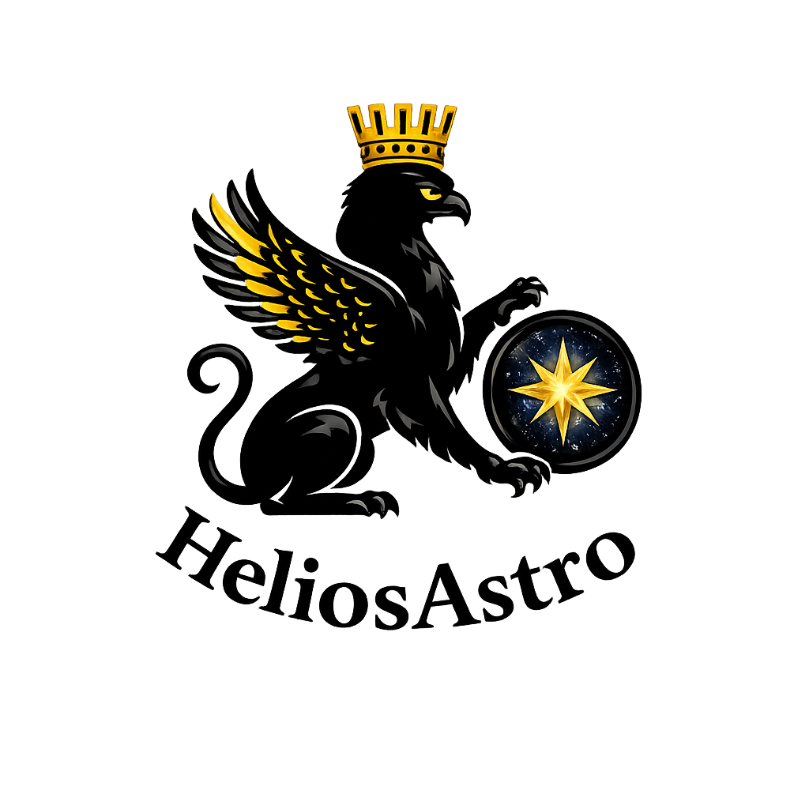

Corps lumineux
Le corps est présenté comme une architecture vivante traversée par des axes lumineux, des centres énergétiques et des géométries internes.

HeliosAstro • Photonic • CHLS9Collection Helios • Géométrie sacrée
Une œuvre consacrée à la lumière comme principe d’organisation du vivant : rosaces, géométrie sacrée, organes chromoluminiques, chakras, ADN, galaxies et architectures invisibles du corps.

Tome III
Le corps est présenté comme une architecture vivante traversée par des axes lumineux, des centres énergétiques et des géométries internes.
Les organes deviennent des centres d’émission, de réception et de transformation des flux de lumière et d’information.
Galaxies, spirales, ADN, rosaces et formes sacrées dialoguent dans une même lecture symbolique du vivant.
Lecture Helios
Ce tome prolonge l’univers Helios en associant le corps humain, la lumière, les chakras, les architectures célestes et les structures géométriques. L’approche est contemplative, intuitive et visuelle : elle ne réduit pas le vivant à une mécanique froide, elle le lit comme une rosace organisée.
Demander un exemplaireCollection complète
Fondations : lumière, géométrie sacrée, formes et rosaces.
Développement des flux, structures et architectures lumineuses.
La lumière comme corps organisé.